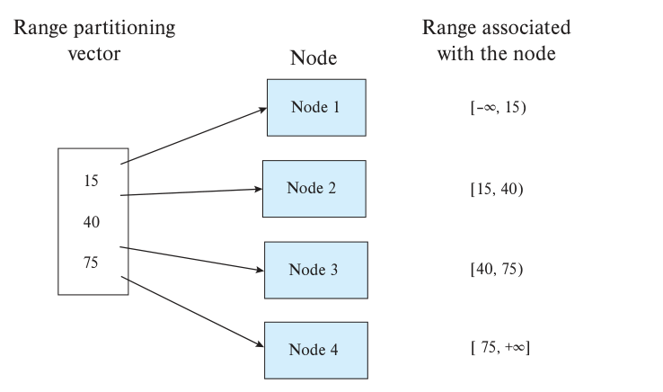
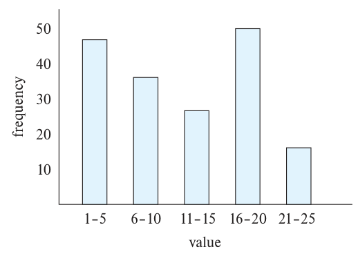
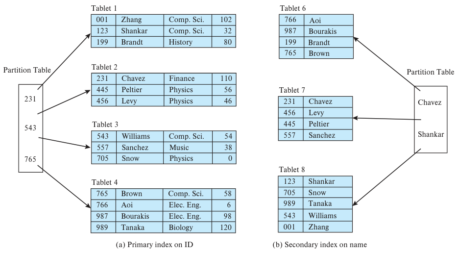
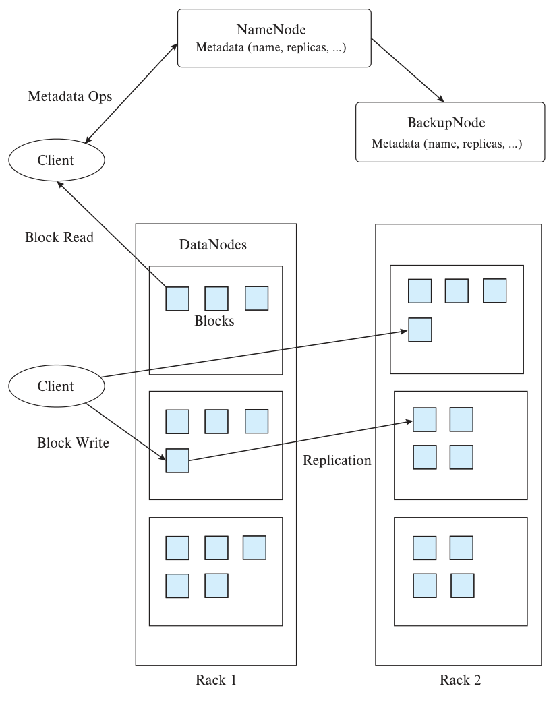
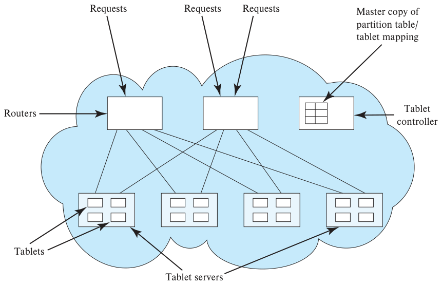

第21章 并行与分布式存储

第20章介绍过，并行处理通过增加处理器、磁盘等资源加快查询，实现加速；也可以提高并行度，在响应时间不变的情况下承担更大的工作负载，实现扩展。
本章讨论并行数据库中的数据存储与索引技术。
21.1 概述
第21.2和21.3节先讨论如何把数据划分到多个节点，第21.4节介绍复制，第21.5节介绍并行索引。我们主要讨论无共享并行数据库，但这些技术也适用于数据分布在不同地域的分布式数据库。
运行在大量节点上的文件系统称为分布式文件系统，它是并行系统中广泛使用的数据存储方式，第21.6节将介绍。
近年来，并行存储与索引技术也广泛用于非关系数据，包括非结构化文本、XML、JSON 等半结构化数据。这些数据常保存在并行键值存储中，每个数据项对应一个键。关系数据并行存储技术同样适用于第21.7节介绍的键值存储。本章用“数据存储系统”统称键值存储，以及并行数据库的数据存储与访问层。
第22章讨论并行与分布式查询处理，第23章讨论事务处理。
21.2 数据分区
最简单的 I/O 并行，就是把数据分布到多个磁盘上，缩短从磁盘读取数据的时间。1
在底层，RAID 把块分布到多个磁盘上，实现并行访问。第12.5节介绍过，块通常按轮转方式分配：若 n 个磁盘编号为0到 n−1，块 i 就放在磁盘 i mod n。但 RAID 的块级分区无法控制关系中的哪些元组放在哪个磁盘或节点。因此，并行数据库通常采用元组级分区。
多个节点各有多个磁盘时，分区原则上可以细化到单个磁盘。不过，并行数据库通常关注节点之间的数据分布，节点内部的块到磁盘分配交给操作系统决定。
关系的元组分到多个节点，每个元组位于一个节点，这称为水平分区。下面介绍几种水平分区策略。
第13.6节在列式存储中介绍的垂直分区，可以与水平分区独立配合。例如，关系 r(A, B, C, D) 以 A 为主键，许多查询需要 B，但 C、D 值很大且很少使用，就可以垂直划分为 r(A, B) 和 r(A, C, D)。元组先水平分到各节点后，每个节点内部仍可按垂直分区方式存储。
有些数据库厂商把“分区”用于另一种情况：关系 r 划分为多个物理关系 r₁、r₂、…、rₙ，但全部位于同一节点。r 本身不存储，而是定义为 r₁ ∪ r₂ ∪ … ∪ rₙ 的视图。这种节点内分区，通常为了把频繁访问的元组与较少访问的元组分开，区别于跨节点水平分区。第25.1.4.3节会进一步介绍。
本章余下部分以及后续章节，“分区”均指跨多个节点的水平分区。
21.2.1 分区策略
下面介绍三种基本元组分区策略。设数据要分布到 n 个节点 N₁、N₂、…、Nₙ 上。

图21.1：范围分区向量（Range partitioning vector）为[15, 40, 75]；节点（Node）1～4分别对应区间（Range associated with the node）[−∞, 15)、[15, 40)、[40, 75)、[75, +∞]。
- 轮转分区。按任意顺序扫描关系，把扫描到的第 i 个元组发送到编号为 ((i−1) mod n)+1 的节点。这样各节点的元组数量大致相同，分布均匀。
- 散列分区。从关系模式中选一个或多个属性作为分区属性，选取值域为 {1, 2, …, n} 的散列函数。对每个元组的分区属性计算散列值，结果为 i，就放到 Nᵢ。2
- 范围分区。每个节点负责一个连续属性值区间。选取分区属性 A，以及严格递增的分区向量 [v₁, v₂, …, vₙ₋₁]。对于满足 t[A] = x 的元组 t：若 x < v₁，放到 N₁；若 x ≥ vₙ₋₁，放到 Nₙ；若 vᵢ ≤ x < vᵢ₊₁，放到 Nᵢ₊₁。
图21.1的例子中，小于15的值映射到节点1；[15, 40) 即大于等于15、小于40的值映射到节点2；[40, 75) 映射到节点3；大于等于75的值映射到节点4。
译注： 原文前一页把节点序列误写为 N₁、N₁、…、Nₙ，这里按顺序写为 N₁、N₂、…、Nₙ。原文图21.1的说明写“>75”，但分区定义与图中的区间都包含75，译文据此写为“≥75”。
关系更新时，按以下方式维护分区。
- 插入元组时，按分区策略发送到相应节点。
- 删除元组时，先通过分区属性定位；轮转分区则要搜索全部分区。找到后在所在位置删除。
- 更新元组时，如果使用轮转分区，或没有修改分区属性，位置不变。采用散列或范围分区且修改了分区属性时，位置可能改变，此时：
a. 从原位置删除旧元组。
b. 插入新元组，按分区策略发送到相应节点。
21.2.2 分区技术比较
关系分到多个节点后，可以用全部节点并行读取；分区写入时，也可以并行写向多个节点。因此，I/O 并行明显提高了整个关系的读写速率。但扫描完整关系只是数据访问的一种，访问还可分为以下类型：
- 扫描整个关系。
- 按属性值定位元组，例如
employee_name = "Campbell"，这称为点查询。
- 查找某属性位于指定范围内的全部元组，例如
10000 < salary < 20000，这称为范围查询。
不同分区技术对这些访问的支持效率不同。
- 轮转分区适合每次查询都顺序读取整个关系的应用。处理点查询和范围查询都较麻烦，因为必须搜索全部 n 个节点。
- 散列分区最适合基于分区属性的点查询。例如，按
telephone_number分区后，要找电话为555-3333的雇员，只需对555-3333计算散列值，再搜索对应节点。将查询定向到单节点，可以省去在多个节点启动查询的开销，也让其他节点处理别的查询。
散列分区也适合全关系顺序扫描。如果散列函数随机化效果好，而且分区属性构成关系的键，各节点的元组数就大致相等、差异很小。扫描时间约为单节点的1/n。
但它不适合基于非分区属性的点查询，也不适合范围查询，因为散列通常不保留值之间的邻近关系，范围查询必须扫描所有节点。 - 范围分区适合基于分区属性的点查询和范围查询。点查询根据分区向量定位节点；范围查询根据向量确定可能包含目标元组的节点范围，两者都只访问相关节点。
查询范围内元组很少时，通常只需访问一个节点，其他节点可以处理其他查询，因此能同时获得较高吞吐量和较好响应时间。但范围内元组很多时，例如查询覆盖属性域的较大部分，大量数据却可能集中在少数节点，形成 I/O 瓶颈，即热点。这是一种执行倾斜：处理集中在一个或少数分区。此时散列和轮转分区可以动用所有节点，在吞吐量大致相同的情况下提供更快响应。
分区方式还会影响连接等其他关系操作，第22.3和22.4.1节将讨论。
因此，分区技术的选择也取决于需要执行的操作。一般更倾向于散列或范围分区。
大关系适合分区，但受益于并行存储的大数据库中，也常有小关系。小关系分区后，每个节点可能只剩几条元组，得不偿失。通常每个节点至少应分到几个磁盘块的数据，分区才有价值。小关系最好不分区；大型系统中的中等关系，则可以只分布到部分节点。
21.3 处理分区倾斜
采用轮转以外的方式分区时，可能有些分区容纳大量元组，其他分区很少。这种不均衡称为数据分布倾斜，主要有两种原因。
- 属性值倾斜：许多元组的分区属性取相同值，它们都进入同一分区，造成倾斜。
- 分区倾斜：即使没有属性值倾斜，分区本身也可能造成负载不均衡。
无论散列还是范围分区，属性值倾斜都可能使分区不均。范围分区向量选择不当会造成分区倾斜；散列分区若采用良好散列函数，这类倾斜的可能性较低。
第20.4.2节提到，轻微倾斜也可能明显影响性能，并行度越高，问题越突出。例如，1000个元组分成10份，本应每份100个；如果某份达到200个，并行访问加速比就只有5，达不到10。若分成100份，平均每份10个；只要有一份达到40个，考虑分区很多，这并非不可能，加速比就只有25，达不到100。因此，倾斜造成的加速损失会随并行度增大。
即使元组分布均匀，查询对某些分区的访问更频繁，也会出现执行倾斜。例如按时间戳分区，而查询大多访问最近的元组，那么即使各分区元组数相同，存放近期数据的分区仍会承受更大负载。
本节余下部分介绍几种处理倾斜的方法。
21.3.1 均衡的范围分区向量
选择均衡的范围分区向量，把元组平均分配到各节点，可以避免范围分区中的数据分布倾斜。
一种构造方法是排序：先按分区属性排序，再顺序扫描。每读完关系的1/n，就把下一条元组的分区属性值加入分区向量，其中 n 为分区数。
主要缺点是初始排序带来额外 I/O。可以利用预先计算的属性值频率表，也就是直方图，降低这项开销。图21.2展示了取值1～25的整数属性的直方图。有了分区属性直方图，构造均衡分区函数就很直接。直方图占用空间小，多属性直方图可以保存在系统目录中。如果没有预存，可以随机选择关系的一部分磁盘块，对其中元组采样，近似计算。随机采样构造直方图，比排序整个关系快得多。
上述方法处理数据分布倾斜；如何扩展它以处理执行倾斜，留作练习21.3。
这个方法的缺点是静态性：分区在某时刻确定，不会随元组插入、删除或更新自动调整。检测到倾斜后可以重新计算向量并重新分区，但成本可能很高，定期执行还会增加系统负载，干扰正常处理。第21.3.2和21.3.3节讨论持续适应变化、干扰更小的动态方法。
21.3.2 虚拟节点分区
减少倾斜影响的另一种办法是使用虚拟节点。设想虚拟节点数是真实节点数的数倍，用前面的任一种分区技术，把元组和工作先映射到虚拟节点。3

图21.2：横轴为值区间（value）：1～5、6～10、11～15、16～20、21～25；纵轴为频数（frequency）。
再把虚拟节点映射到真实节点。一种做法是轮转：n 个真实节点编号1～n，虚拟节点 i 映射到真实节点 ((i−1) mod n)+1。思路是，即使某个值域因倾斜而包含大量元组，它也可能被多个虚拟节点的范围分摊，再经轮转分配到不同真实节点，避免全部负担落在一个节点上。
更精细的方法是跟踪各虚拟节点的元组数和负载，例如每秒访问次数，再把它们分配到真实节点，使数据量与负载都尽量均衡，减少数据分布倾斜和执行倾斜。
系统必须保存映射，并据此把访问路由到正确的真实节点。若 m 个虚拟节点用连续整数编号，可用含 m 个条目的数组 virtual_to_real_map[] 保存，第 i 项记录虚拟节点 i 对应的真实节点。
虚拟节点还支持存储弹性：负载增加时，可以添加真实节点。新节点加入后，只需把部分虚拟节点迁过去，不影响其他虚拟节点。如果每个虚拟节点的数据量不大，迁移就相对快，对服务干扰也小。
21.3.3 动态重新分区
虚拟节点能减轻范围和散列分区的倾斜，但数据分布随时间变化时，有些虚拟节点仍可能积累大量元组或负载。例如按时间戳分区，随着记录插入，最后一个时间区间不断增长，其他区间却没有新记录。最初均衡的分区也会越来越不均衡。
可以重新计算整个分区方案，但通常代价很高。上述例子会把各分区的大量记录移向时间顺序上更早的分区。数据规模大时，这种整体调整的成本难以接受。
利用虚拟节点，可以高效地动态重新分区。基本思想是：某个虚拟节点元组过多或负载过高时，把它分裂成两个，类似 B+树节点溢出时分裂。再把其中一个迁到其他真实节点，重新平衡数据量或负载。
例如，时间范围2017-01-01到 MaxDate 的虚拟节点过满，且一半元组早于2018-01-01，就可分为两个：一个是2017-01-01到2018-01-01之前，另一个是2018-01-01到 MaxDate。只需把其中一个虚拟节点移到新真实节点，即可平衡数据量。
这种动态重新分区方式广泛用于并行数据库和存储系统。在数据存储系统中，“表”表示数据项集合，表被划分为多个 tablet（分片）。分片数量远多于真实节点，因此分片对应虚拟节点。
系统维护分区表，把分区键范围映射到分片标识符，以及保存该分片的真实节点。图21.3以日期为分区键：Tablet0 保存早于2012-01-01的记录；Tablet1 保存从2012-01-01起、早于2013-01-01的记录；Tablet2 保存从2013-01-01起、早于2014-01-01的记录，依此类推；Tablet6 保存从2017-01-01起的记录。
图21.3：分区表示例。日期值表示对应分片区间的上边界。
| 值 | 分片ID | 节点ID |
|---|---|---|
| 2012-01-01 | Tablet0 | Node0 |
| 2013-01-01 | Tablet1 | Node1 |
| 2014-01-01 | Tablet2 | Node2 |
| 2015-01-01 | Tablet3 | Node2 |
| 2016-01-01 | Tablet4 | Node0 |
| 2017-01-01 | Tablet5 | Node1 |
| MaxDate | Tablet6 | Node1 |
读请求应指定分区属性值，以确定可能包含该键的分片；未指定时，就必须发往所有分片。系统先用键值 v 找到范围包含 v 的分片，再把请求发到对应真实节点。每个分片维护分区键索引，可以在节点内高效处理请求。
写入、插入、删除也通过相同路由机制定位正确分片和真实节点。
分片过大时，可以把键范围分为两段，新建分片接管一段，将对应记录移过去，再更新分区表。之后的请求就会发往正确分片。
真实节点因请求过多或数据过多而过载时，可以把部分分片移到负载较低的节点。节点之间数据量不均衡，也可这样调整。新节点加入后，可以从已有节点迁入一些分片。每次迁移都更新分区表，使后续请求到达正确节点。
图21.4中，原本负责2017-01-01及以后数据的 Tablet6 被分成两个：Tablet6 现在负责2017-01-01起、2018-01-01之前的数据；新 Tablet7 负责2018-01-01及以后的数据。大量插入可能使 Tablet6 过大，分裂可重新平衡分片大小。
图中还把 Tablet1 从 Node1 移到了 Node0，可能是 Node1 数据过多或请求过多造成负载过高。
图21.4：分片分裂并迁移后的分区表。
| 值 | 分片ID | 节点ID |
|---|---|---|
| 2012-01-01 | Tablet0 | Node0 |
| 2013-01-01 | Tablet1 | Node0 |
| 2014-01-01 | Tablet2 | Node2 |
| 2015-01-01 | Tablet3 | Node2 |
| 2016-01-01 | Tablet4 | Node0 |
| 2017-01-01 | Tablet5 | Node1 |
| 2018-01-01 | Tablet6 | Node1 |
| MaxDate | Tablet7 | Node1 |
多数并行存储系统把分区表放在一个主节点上。为支持每秒大量请求，通常还会把它复制到所有访问数据的客户端节点，或多个路由节点上。路由节点接收客户端读写请求，按键值转发到存放相应分片或虚拟节点的真实节点。
另一种完全分布式的方法是一致性散列。它把键散列到很大的空间，例如32位整数，同时把节点或虚拟节点标识符散列到同一空间。键 kᵢ 可以映射到满足 h(nⱼ) < h(kᵢ) 的节点中，h(nⱼ) 最大的那个。但为保证每个键都有对应节点，把散列空间首尾相连成环，类似钟面，最大值 maxhash 之后紧接0。于是，从 h(kᵢ) 沿环逆时针找到的最近节点 nⱼ，就是该键的逻辑归属。
基于这一思想的分布式散列表无须主节点或路由器。每个节点只跟踪少量对等节点，合作完成路由。新节点按规定协议加入，以完全对等方式融入系统，无须主节点协调。更多信息见本章延伸阅读。
21.4 复制
节点数量增加后，至少一个节点故障的概率明显高于单节点系统。设计不当的并行系统会因任一节点故障而停机。单节点故障概率较小时，系统故障概率近似随节点数线性增长。例如，单节点平均5年故障一次，100节点系统平均约18天就遇到一次故障。
因此，并行存储系统必须能抵御节点故障：既要避免数据丢失，也要在故障期间继续提供服务。
为防止节点故障导致元组丢失，通常将元组复制到至少两个、常常三个节点。某节点故障后，仍可访问其他节点的副本。4
逐元组跟踪副本位置会造成很大的存储和查询开销。因此实际以分区为单位复制，分区可以是分片、节点或虚拟节点。副本位置作为分区表的一部分保存。
图21.5中，每个分片都在两个节点上保存副本。
图21.5：图21.4加入复制后的分区表。
| 值 | 分片ID | 节点ID |
|---|---|---|
| 2012-01-01 | Tablet0 | Node0, Node1 |
| 2013-01-01 | Tablet1 | Node0, Node2 |
| 2014-01-01 | Tablet2 | Node2, Node0 |
| 2015-01-01 | Tablet3 | Node2, Node1 |
| 2016-01-01 | Tablet4 | Node0, Node1 |
| 2017-01-01 | Tablet5 | Node1, Node0 |
| 2018-01-01 | Tablet6 | Node1, Node2 |
| MaxDate | Tablet7 | Node1, Node2 |
数据库跟踪故障节点，把原本发往这些节点的请求自动路由到保存副本的备份节点。一个或多个副本所在节点故障时如何处理，第21.4.2节简要讨论，第23.4节详细介绍。
21.4.1 副本放在哪里
两个节点保存副本，可抵御单节点故障造成的数据丢失或不可用；三个节点则可抵御两个节点故障。如果某分区的全部副本所在节点都失败，就无法避免数据丢失或不可用。使用低成本通用机器的系统通常采用三副本，使用更可靠机器的系统通常采用双副本。
并行系统有多种故障模式：节点内部故障会使单节点失效；整个机架供电故障，或机架交换机故障，也可能使整架节点不可访问；火灾、洪水、大规模停电等还可能使整个数据中心失效。
因此必须仔细选择副本位置，尽量保证故障中至少一个副本可访问。复制既可以在数据中心内部，也可以跨数据中心。
- 数据中心内复制。单节点故障最常见，因此通常先复制到另一节点。类树网络中，同机架带宽远高于跨机架带宽，在同架另一个节点保存副本可减少跨架流量。但为了应对机架故障，还需要在其他机架保存副本。
- 跨数据中心复制。为了应对整个数据中心失效，可以再复制到一个或多个地理分离的数据中心。地理隔离有助于防止地震、风暴等灾害同时关闭同一地区的全部数据中心。
许多 Web 应用受长距离网络往返延迟影响明显。Ajax 应用需要浏览器与应用反复交互，使问题更加突出。解决方法是把用户连接到地理上最近的应用服务器，并使一个数据副本位于同一数据中心，或至少在附近。
假定 N₁ 的全部分区都复制到同一个 N₂。N₁ 故障时，N₂ 既要处理自己的请求，又要接管 N₁ 的全部请求，工作量可能是其他节点的两倍，形成故障期间的执行倾斜。
为避免这一点，一个节点上各分区的副本应分散到其他多个节点。例如，10节点系统采用双副本，N₁ 保存 p₁～p₉ 的一个副本，其他副本分别把 p₁ 放在 N₂、p₂ 放在 N₃，依此类推，p₉ 放在 N₁₀。N₁ 故障时，额外工作便由 N₂～N₁₀ 平均分摊。
21.4.2 更新与副本一致性
每个分区都有多个副本，对其中元组的更新必须应用到所有副本。创建后不再更新的数据，可从任意副本读取，因为值相同。如果系统能对全部副本加排他锁并以原子方式更新，例如使用第23.2.1节的两阶段提交，那么读取时取得共享锁后，也可访问任意副本，并读到最新版本。
若副本更新不具原子性，不同副本可能暂时不同，读到什么值取决于访问了哪个副本。多数应用要求读取最新元组，基于旧版本更新可能造成更新丢失。
一种保证读到最新值的方法，是为每个分区指定一个主副本。全部更新先发到主副本，再传播到其他副本；读取也访问主副本，即使其他副本尚未更新，仍能读到最新数据。
主副本故障时，需要指定新主副本，并确保旧主副本执行的每次更新，新主副本都已经收到。旧主副本可能只更新了部分副本便故障，新主副本还必须补完剩余更新。详细内容见第23.6.2节。
系统必须知道每个分区当前的主副本，可以将此信息与分区表一起保存。分区表除了记录键范围，还要记录各副本的位置，以及哪个是当前主副本。
副本更新常用三种方案。
- 两阶段提交（2PC），见第23.2节。它保证一个事务在多个站点上的更新原子地完成，也可用于保证一个元组的全部副本原子更新。
这里暂定全部副本都可访问、可更新。部分副本因故障无法访问时，如何让2PC继续运行，见第23.4节。 - 持久消息传递，见第23.2.3节，保证消息发出后最终送达。可以把元组更新登记为持久消息，发送给全部副本；记录后，消息系统保证最终投递，因此所有副本最终都会得到更新，这称为最终一致性。
但消息可能延迟，期间某些副本已更新，另一些尚未更新。为保证读取一致版本，读取只访问最先更新的主副本。主副本故障后，另一个副本只有应用完所有待处理更新消息，才接管主副本角色。详细内容见第23.6.2节。 - 共识协议允许部分副本故障、无法访问时继续更新。与前两类不同，共识协议即使没有指定主副本也能工作。第23.8节会介绍。
21.5 并行索引
并行数据存储系统中的索引分为局部索引和全局索引。下面讨论采用虚拟节点分区的系统时，“节点”均指虚拟节点，也就是分片。
- 局部索引（local index）建立在某一个节点存储的元组上。通常，关系的每个分区都会建立这种索引，索引内容与数据存储在同一节点。
- 全局索引（global index）建立在跨多个节点存储的数据上。无论元组存储在哪里，都可以通过全局索引高效地查找匹配元组。
全局索引的内容可以集中存放，但这样做的可扩展性较差。实际设计应将全局索引的内容分区存储在多个节点上。
关系的全局主索引（global primary index）是建立在该关系的分区属性上的全局索引。要在分区属性 K 上构建全局索引，只需在每个分区内建立 K 的局部索引。
查询 K 值为 k₁ 的元组时，先确定哪个分区可能保存 k₁，再利用该分区的局部索引查找所需元组。
例如，假设 student 关系按 ID 属性分区，并且需要在 ID 上建立全局索引。此时只需在每个分区内建立 ID 的局部索引。图21.6(a)展示了 student 关系在 ID 上的全局主索引，图中省略了局部索引。
要查询 ID 为557的学生，先将557代入 ID 的分区函数，确定它可能所在的分区，再把查询发送给对应节点。该节点利用 ID 上的局部索引找出所需元组。
虽然这个例子中的 ID 是 student 的主键，但分区属性即使不是主键，也可以采用上述方法。如果分区函数本身按值域划分，还可以把这个方案扩展到范围查询；基于散列的分区方案无法这样支持范围查询。
关系的全局辅助索引（global secondary index）是指索引属性与关系的分区属性不同的全局索引。
设分区属性为 Kₚ，索引属性为 Kᵢ，且 Kₚ ≠ Kᵢ。对 Kᵢ 进行选择查询的一种办法，是在每个分区内建立 Kᵢ 的局部索引，然后把查询发给所有分区，分别通过局部索引寻找匹配元组。分区很多时，这种方法效率很低：即使匹配元组只位于一个或少数几个分区，也必须查询每个分区。

图21.6：左侧按 ID 分区并建立主索引；右侧按 name 分区建立辅助索引，通过学生姓名找到 ID，再定位左侧的完整学生记录。Partition Table 为分区表，Tablet 为分片；原始姓名、院系和学分数据保留在图中。Comp. Sci. 为计算机科学，History 为历史，Finance 为金融，Physics 为物理，Music 为音乐，Elec. Eng. 为电气工程，Biology 为生物学。
下面用一个例子说明如何高效构建全局辅助索引。仍然考虑按 ID 分区的 student 关系，假设要在 name 上建立全局索引。一个简单方法是：为每个学生元组生成一个 (name, ID) 元组，将这组元组记作 index_name。把 index_name 按 name 分区，并在每个分区内建立 name 的局部索引。此外，还要在分区属性 ID 上建立全局索引。图21.6(b)展示了 student 关系在 name 上的辅助索引，局部索引未画出。
要查询给定姓名的学生，先利用 index_name 的分区函数，确定哪个分区可能保存该姓名对应的 index_name 元组；再把查询发送到该分区，通过 name 的局部索引找到对应的 ID；最后利用 ID 的全局索引找出所需的完整元组。
在这个例子中，分区属性 ID 没有重复值，所以 index_name 只需包含索引键 name 和 ID。若分区属性允许重复，就需要添加其他属性，确保能够唯一标识元组，具体方法如下。
一般来说，设关系 r 按属性集 Kₚ 分区，要在属性集 Kᵢ 上建立全局辅助索引，就创建一个新关系 rˢᵢ，其中包含以下属性：
- Kᵢ 和 Kₚ。
- 如果 Kₚ 有重复值，还要加入属性集 Kᵤ，使 Kₚ ∪ Kᵤ 成为被索引关系的一个键。
将 rˢᵢ 按 Kᵢ 分区，并在 Kᵢ 上建立局部索引。另外，在关系 r 的每个分区内，对属性 (Kₚ, Kᵤ) 建立局部索引。
现在来看如何利用全局辅助索引处理查询。假设查询给出了 Kᵢ 的某个值 v，处理步骤如下：
- 根据 Kᵢ 的分区函数，找到 rˢᵢ 中与 v 对应的分区。
- 利用该分区内 Kᵢ 的局部索引，找出 Kᵢ 值为 v 的 rˢᵢ 元组。
- 将上一步得到的元组按 Kₚ 的值分区，发送到相应节点。
- 每个节点利用收到的元组，以及 r 在 Kₚ ∪ Kᵤ 上的局部索引，找出匹配的 r 元组。
关系 rˢᵢ 实际上是一个物化视图，其定义为：
rˢᵢ = Π_Kᵢ,Kₚ,Kᵤ(r)
每当 r 中发生元组插入、删除或更新，都必须相应地更新物化视图 rˢᵢ。
在一个节点上更新 r 的元组，可能引起其他节点上的 rˢᵢ 元组更新。例如，图21.6中，若将 ID 为001的学生姓名从 Zhang 改为 Yang，Tablet8 中的 (Zhang, 001) 就要更新为 (Yang, 001)。Zhang 和 Yang 属于辅助索引的同一分区，其他分区不受影响。如果改成 Bolin，则需要从 Tablet8 删除 (Zhang, 001)，并在 Tablet6 插入 (Bolin, 001)。
若要求辅助索引更新与基关系更新属于同一事务，就必须保证跨多个节点的更新原子提交。第23.2节介绍的两阶段提交可以完成这一任务。如果允许辅助索引暂时落后于基关系，也可以采用第23.2.3节介绍的持久消息方案。
21.6 分布式文件系统
分布式文件系统将文件存储在大量机器上，同时向客户端呈现一个统一的文件系统。它和其他文件系统一样，使用文件名与目录来标识和访问文件，客户端无需关心文件实际存放在哪里。
第一代分布式文件系统主要让客户端访问一个或多个文件服务器上的文件。本节关注的后续系统，则把文件块分布到数量庞大的节点上，能够存储海量数据，支持大量客户端并发访问。Google 在21世纪初开发的 Google File System（GFS）是其中一个标志性系统，在 Google 内部得到广泛使用。开源的 Hadoop 文件系统（HDFS）以 GFS 的架构为基础，在本书写作时也已广泛应用。
这类分布式文件系统一般针对大文件设计，文件大小从几十 MB 到数百 GB，甚至更大；但文件数量通常处于百万级，并不以存储数十亿个不同文件为目标。前面讨论的并行数据存储系统则面向数十亿乃至更多的数据项，单个数据项的大小可以从几十字节到几 MB。
分布式文件系统也把数据存放在多个节点上。文件可能远大于数据存储系统中的单个数据项，所以需要切分成多个块；同一个文件的块可以分布在多台机器上。每个文件块还会复制到多台机器，通常是三台，以免单机故障导致整个文件无法访问。
文件系统通常维护两类元数据：
- 目录系统，用目录和子目录组织文件层次。
- 文件名到块标识符序列的映射；这些块存放文件的实际数据。
在集中式文件系统中，块标识符用于定位磁盘等存储设备上的块。分布式文件系统还必须提供块所在的位置，也就是节点标识符；由于存在副本，一个块标识符通常对应一组节点标识符。
本节接下来介绍 Hadoop 文件系统（HDFS）的组织方式，架构见图21.7。它源于 Google 文件系统（GFS）。HDFS 中存储数据块的机器称为数据节点（datanode）。每个块都有一个 ID，数据节点把块 ID 映射到本地文件系统中存储该块的位置。
文件系统元数据也可以分布在多个节点上，但设计不当容易影响性能。GFS 和 HDFS 采用了较简单、务实的办法：将文件系统元数据集中存储在一个节点上。HDFS 将其称为名称节点（namenode）。

图21.7：NameNode（名称节点）维护文件名、副本位置等元数据，BackupNode（备份节点）备份元数据；Client（客户端）向名称节点发起 Metadata Ops（元数据操作），直接向 DataNodes（数据节点）读写 Blocks（数据块）。Rack 1、Rack 2 是两个机架，Replication 表示副本复制，Block Read、Block Write 分别表示块读取、块写入。
所有元数据读取都要经过名称节点。如果每次都必须访问磁盘，每秒能处理的请求就很少。HDFS 为此将全部元数据缓存在名称节点的内存中，而内存容量也就限制了系统能管理的文件数和块数。为了节约元数据内存，HDFS 使用较大的块；原书以通常64 MB为例，这样每个文件需要跟踪的块就更少。即便如此，机器的内存容量仍使名称节点所能支持的文件数通常处于百万量级。不过，配合数 GB 的内存和数十 MB 的块，HDFS 已经能够管理数 PB 数据。
数据节点数量庞大时，节点故障是常见情况，因此数据块必须复制到多个数据节点上。一个数据节点故障后，仍可从保存该块副本的其他节点读取数据。将数据复制到三个节点是一种常用做法，可以在存储开销适中的情况下提供高可用性。
HDFS 打开并读取文件的过程如下。客户端先把文件名发给名称节点；名称节点查出文件数据所在的块 ID 列表，并将每个块的副本所在节点一并返回。随后，客户端为每个块选择一个副本，把块 ID 发给该节点以获取内容。如果这个副本没有响应，就联系其他副本。
写入时，客户端也先联系名称节点。名称节点分配块，并决定各块副本应存放在哪些数据节点上，记录元数据后将其返回客户端。客户端随后将块写到各副本。为了减少网络流量，HDFS 实现可以把两个副本放在同一机架：先向其中一个副本写入，再由它把数据复制给同机架中的另一个副本。所有副本都完成块写入后，系统才向客户端发送确认。
文件更新会带来副本一致性问题。例如，一个副本已经更新，另一个却因系统故障没有完成更新，副本状态便会不一致。此时读到什么值取决于访问了哪个副本，这种行为无法接受。
一般的数据存储系统需要通过第23章介绍的技术处理一致性。HDFS 等一些分布式文件系统采取另一种办法：不允许修改已经写入的数据，只允许在文件末尾追加。原书描述的访问模型是：每写入一个块，就将它复制到各副本；只有文件关闭，即全部数据已经写入、所有块的各副本均写入成功后，才能读取文件。这种模式有时称为一次写入、多次读取（write-once-read-many）。GFS 等系统则允许更新，并能检测副本写入故障造成的某些不一致状态，但不支持事务性的原子更新。
对许多分布式文件系统应用来说，只能追加、不能修改已有数据并不妨碍使用。需要更新操作的应用应使用支持更新的数据存储系统。
21.7 并行键值存储
许多 Web 应用需要存储数十亿条相对较小的记录，每条从几 KB 到几 MB不等，数据要分布在数千个节点上。把这些记录分别作为文件存进分布式文件系统并不可行，因为文件系统并非针对如此庞大的小文件数量设计。理想情况下，可以使用大规模并行关系数据库，但21世纪初已有的并行关系数据库无法应对这种规模，也不能在不明显干扰现有活动的情况下方便地增加节点。
为满足这类 Web 应用的需要，人们开发了多种并行键值存储系统。键值存储（key-value store）允许以键标识数据项（值），保存或更新它，并根据给定的键取回数据项。有的系统把值看作无需解释的字节序列，有的允许为值定义模式。如果支持模式，就可以在数据项的指定属性上建立并维护辅助索引。
键值存储对表提供两个基本函数：put(table, key, value) 将键及其对应的值存入表；get(table, key) 取回给定键对应的值。此外，也可能支持其他操作，例如用 get(table, key1, key2) 对键进行范围查询。
许多键值存储还支持某种灵活模式：
- 有些与关系型存储类似，允许在模式定义中指定列名。
- 有些允许对单个元组添加或删除列，通常称为宽列存储（wide-column store）。例如，
put(table, key, columname, value)把值写入指定行的指定列；行由 key 标识，列不存在时便创建。get(table, key, columname)读取指定行的指定列，delete(table, key, columname)则从该行删除指定列。这里的参数名columname沿用原书写法。 - 还有些允许与键关联的值采用复杂结构，通常使用 JSON，这类系统常称为文档存储（document store）。
能够为值指定全部或部分模式，就能在存储端计算选择谓词。有些系统还利用模式来支持辅助索引。
本书用“键值存储”统称上述系统；有些人则采用较窄的定义，只用这个词指不支持任何模式、将值视为不透明字节序列的系统。
并行键值存储通常支持弹性（elasticity），能够按需求逐步增加或减少节点。新增节点时，可以把分片迁移过去；缩减节点时，则先移走某些节点上的分片，再将这些节点从系统移除。
原书列举的常用系统中，支持灵活列的宽列存储包括 Google Bigtable、Apache HBase、Apache Cassandra（最初由 Facebook 开发）以及 Microsoft Azure Table Storage。支持模式的系统包括 Google Megastore、Spanner，以及 Yahoo! 的 Sherpa/PNUTS。支持半结构化数据的文档存储包括 Couchbase、Amazon DynamoDB 和 MongoDB。Redis 与 Memcached 是常用于缓存的并行内存键值存储。
按本书讨论的典型系统来看，键值存储尚不具备完整数据库的许多标准功能。通常缺少的能力包括使用 SQL 或其他声明式语言进行查询、事务支持，以及根据非键属性的选择条件高效检索记录；传统数据库通过辅助索引支持最后一种能力。这些系统一般也不支持对键以外的属性施加主键约束，且不支持外键约束。
21.7.1 数据表示
以 Web 应用中的用户资料为例，同一组织运行的多个应用可能都需要访问这些资料。资料包含多种属性，而且常常要增加新属性；有些属性又包含复杂数据。简单的关系表示往往不足以表达这些内容。
许多键值存储支持 JavaScript 对象表示法（JSON，见8.1.2节）。JSON 已越来越多地用于复杂数据表示，允许记录包含不同的属性集合，也允许属性采用灵活的数据类型。Bigtable 等系统则定义了自己的复杂数据模型，支持包含大量可选列的记录。
Bigtable 不把一条记录存为一个整体值，而是将各个属性分别存储。从概念上看，一个属性值的键是 (record-identifier, attribute-name)，即“记录标识符、属性名”；对 Bigtable 来说，每个属性值只是一个字符串。要获取一条记录的全部属性，可以进行范围查询，更准确地说，是仅以记录标识符为条件的前缀匹配查询。get() 会同时返回属性名和值。存储系统按键排序，使同一条记录的各属性值聚集在一起，从而高效获取完整记录。
记录标识符本身还可以采用层次结构，尽管 Bigtable 仍将其视为普通字符串。例如，网页抓取应用可以把 URL：
www.cs.yale.edu/people/silberschatz.html
映射为记录标识符：
edu.yale.cs.www/people/silberschatz.html
这样，相近域名的页面就能按有用的顺序聚集存储。
数据存储系统常允许保留数据项的多个版本。版本通常用时间戳标识，也可以用整数版本号，每创建一个新版本就递增一次。读取时可以指定版本，也可以选择版本号最大的版本。例如，Bigtable 的完整键实际上由三部分组成：(record-identifier, attribute-name, timestamp)。
一些键值存储支持列式存储，将一行中的各列分别保存，并为每个列值保存行键。这样，扫描时可以高效读取所有行的某一列，无需从存储中取出其他列。按通常的行式方式保存全部列值时，顺序扫描会连同不需要的列一起读取，降低性能。
一些系统还支持列族（column family），将一组列归为一个列族。对于同一行，同一列族的列存放在一起，不同列族分别存储。如果若干列经常一同读取，把它们放进同一列族可以提高效率：纯列式存储需要分别读取这些列，纯行式存储又可能读入不需要的列。
21.7.2 数据存储与检索
本节沿用21.3.3节的说法，将分区称为分片（tablet）。为某个分片提供服务的节点称为分片服务器（tablet server），该分片的所有请求都发给它。5 分片服务器是保存该分片副本的节点之一，承担21.4.1节所说的主副本角色。6
主节点（master）保存分区信息的主副本，内容包括每个分片的键范围、副本所在节点，以及当前的分片服务器。7 主节点还跟踪分片服务器的健康状态：某个服务器故障后，它会从保存该分片副本的其他节点中指定一个接任。如果某节点过载，或者系统加入新节点，主节点也会重新分配分片以平衡负载。
系统收到每个请求后，都必须确定键对应哪个分片，再将请求路由到相应分片服务器。如果全部交给单个主节点处理，主节点会过载。因此，系统通常用下列两种方式之一并行处理路由：
- 将分区信息复制到客户端。 客户端使用的键值存储 API 查询本地分区信息副本，决定请求发往哪里。Bigtable 和 HBase 采用这种方式。
- 将分区信息复制到一组路由节点。 请求可发给任意路由节点，再由它转发给正确的分片主服务器。PNUTS 就采用这种方式。
分片实际拆分或迁移，与路由节点或客户端更新分区信息之间可能存在时间差，因此路由决定可能依据过期信息。请求到达目标节点后，该节点会发现分片已经拆分，或自己不再保存该分片的主副本。此时节点将请求退回路由节点，并指出路由错误；路由节点从主节点获取最新映射，再把请求转发到正确位置。
图21.8以 PNUTS 架构为参考，展示一个云数据存储系统。其他系统提供类似功能，具体架构可能不同。例如，Bigtable/HBase 没有单独的路由节点，其分区信息和分片服务器映射保存在 GFS/HDFS 中，客户端读取这些信息，自行决定请求发往哪里。

图21.8：Requests（请求）经 Routers（路由节点）发往 Tablet servers（分片服务器）；后者管理 Tablets（分片）。Tablet controller（分片控制器）维护分区表与分片映射的主副本。
21.7.2.1 跨地域存储
一些键值存储支持把数据复制到不同地理位置。其中部分系统还允许按地域对数据分区，使不同分区的副本分布在不同的位置集合中。
跨地域分布的一个主要目的是容错：即使火灾、地震等灾害使整个数据中心失效，系统仍能继续运行。地震还可能同时影响一个地区的所有数据中心。另一个主要目的，是把数据副本放在接近用户的地区；跨越全球取数可能带来数百毫秒延迟。
跨地域复制的主要性能问题，是地域之间的延迟远高于数据中心内部延迟。有些键值存储仍要求事务等待远端更新确认。另一些系统则异步复制到远端，事务无需等待远端确认即可提交；但若更新复制完成前发生故障，就有丢失更新的风险。还有些系统允许应用选择：等待远端确认，或者本地更新完成后立即提交。
支持跨地域复制的系统包括 Apache Cassandra、Google Megastore 和 Spanner、Microsoft Windows Azure Storage，以及 Yahoo! PNUTS/Sherpa 等。
21.7.2.2 索引结构
键值存储会在每个分片的键上建立索引。将记录按键聚集存储，可以高效支持范围查询。B+树文件组织同时支持索引和记录聚集，是一个合适的选择。
不过，Bigtable 和 HBase 构建在只支持不可变文件的分布式文件系统之上：文件一旦创建，就无法更新。B+树需要修改已有内容，因此无法直接以这种不可变文件实现其索引或文件组织。
Bigtable 和 HBase 使用日志结构合并树（LSM 树）的分级合并变体。14.8.1节已作介绍，24.2节会进一步展开。LSM 树不修改已有树，而是利用新数据或合并已有树来创建新树，适合构建在只支持不可变文件的分布式文件系统之上。它还能聚集存储记录，并支持很高的插入和更新速率，这对许多键值存储应用十分有用。Apache Cassandra，以及 MongoDB 使用的 WiredTiger 存储结构等，都采用 LSM 树。
21.7.3 事务支持
大多数键值存储只提供有限的事务支持。例如，通常支持单个数据项的原子更新，并保证这些更新按顺序串行执行。既然操作逐个执行，单个操作层面的可串行化性自然得到满足。但这无法保证事务层面的可串行化性，因为一个事务可能访问多个数据项。
Google Megastore、Spanner 等少数系统完整支持跨多个节点的 ACID 事务，但大多数键值存储不支持跨多个数据项的事务。
一些键值存储提供 test-and-set（测试并设置）操作，使应用能够实现有限的并发控制，下面具体介绍。
21.7.3.1 并发控制
Megastore 和 Spanner 等系统通过加锁实现并发控制。分布式并发控制的问题将在第23章讨论。Spanner 还支持基于时间戳的版本管理和数据库快照，其多版本并发控制的细节见23.5.1节。
本书列举的其他大多数键值存储，例如 Bigtable、PNUTS/Sherpa 和 MongoDB，主要支持单个数据项上的原子操作。一个数据项可以包含多列，在 MongoDB 中则可以是一个 JSON 文档。
HBase、PNUTS 等系统提供原子的 test-and-set：只有数据项的当前版本与指定版本号一致时，才执行更新；检查与更新作为一个原子操作完成。利用这个功能，可以实现有限形式的基于验证的并发控制，见23.3.7节。
有些系统还支持原子递增和存储过程的原子执行。例如，HBase 的 incrementColumnValue() 会原子地读取并递增一个列值，checkAndPut() 则原子地检查条件，并仅在条件满足时更新数据项。HBase 还支持原子执行存储过程，在其术语中称为“协处理器（coprocessor）”。本书讨论的这类过程作用于单个数据项，执行具有原子性。
21.7.3.2 原子提交
Bigtable、HBase 和 PNUTS 支持原子提交对同一行的多次更新，但不支持跨不同行的原子更新。
这一限制也使它们无法直接支持需要同步维护的辅助索引：更新数据项时还要更新辅助索引，而两者无法原子完成。
PNUTS 等系统可以通过延迟更新来支持辅助索引或物化视图。数据项更新后，相应的索引或视图更新会加入消息服务，再发送到需要执行更新的节点。系统保证这些更新最终能够送达并执行，但在执行之前，辅助索引可能与底层数据不一致。PNUTS 的视图维护也采用这种延迟方式。这类索引或视图更新没有事务保证；对于更新何时送达，只提供尽力而为的保证。延迟维护的一致性问题见23.6.3节。
Google Megastore 和 Spanner 则支持跨多个数据项的事务原子提交，数据项可以分布在多个节点上。它们利用23.2节介绍的两阶段提交，保证跨节点提交的原子性。
21.7.3.3 故障处理
分片服务器故障后，应由另一个保存该分片副本的节点接管服务。检测节点故障、重新分配分片服务器，都是主节点的职责。
新节点接管时，必须恢复分片状态。为保证更新能经受节点故障，系统要记录分片更新日志，并复制日志。某节点故障后，其分片被分配到其他节点；每个分片的新主服务器通过日志执行恢复，使本地副本达到最新状态，之后才能处理读写请求。
例如，Bigtable 将映射信息保存在索引结构中，索引和实际分片数据都存入文件系统。分片数据更新不会立即刷出，但日志会立即刷出。文件系统负责复制数据，即使集群中少数节点故障，数据仍可用。因此，分片重新分配后，新服务器仍能获取最新日志。
Yahoo! Sherpa/PNUTS 则显式地把分片复制到集群中的多个节点，并通过持久消息系统实现日志。消息系统在多个节点复制日志记录，以保证故障时仍然可用。新节点接任分片服务器前，必须先应用旧服务器生成但尚未执行完的日志记录。
要在故障时保持数据可用，就必须复制数据。21.4.2节指出，复制中的主要问题是维持副本一致。不同系统以不同方式实现副本的原子更新。Bigtable 和 HBase 复用底层文件系统的复制功能，分别依赖 GFS 和 HDFS。两种文件系统都不支持对文件所有副本进行原子更新，而是提供文件追加，并将追加内容复制到所有块副本。只有所有副本都完成追加，操作才算成功。故障可能使追加仅在部分副本上完成；系统利用序列号检测这种未完成追加，并加以清理。
PNUTS 等系统用持久消息服务记录更新，由消息服务保证更新送达所有副本。Megastore 和 Spanner 则使用分布式共识（distributed consensus）实现一致复制，见23.8节。这类系统要求多数副本可用才能更新。Apache Cassandra 和 MongoDB 等系统允许用户决定一次更新需要多少副本可用；门槛较低时可能出现冲突更新，之后还必须解决冲突。有关问题见23.6节。
21.7.4 没有声明式查询时如何处理数据
本节讨论的键值存储不提供 SQL 之类的查询处理功能，也不提供连接这样的低层操作。不过，许多应用无需查询语言也能工作，它们主要按键存储和读取数据。例如，用户资料可以直接以用户标识符为键。
也有应用需要连接，但会在应用代码中实现，或者采用某种视图物化形式。例如，社交网络需要向每个用户展示所有好友的新帖子，从概念上说，这就需要连接。
一种办法是在应用代码中完成：先找出用户的好友集合，再逐个查询每位好友对应的数据对象，读取其最近的帖子。
另一种办法是，在用户发帖时就向其每位好友对应的数据对象发送消息，把新帖摘要写入该好友的相关数据。好友查看更新时，所有所需内容已集中在一处，可以快速读取。
两种方法都不要求底层支持连接，但代价不同：第一种查询时开销较高，第二种需要更多存储空间，写入时的开销也较高。
21.7.5 性能优化
数据的物理位置由存储系统决定，对客户端不可见。当多个关系需要连接时，分别独立分区可能带来较高的通信开销。例如，两个关系经常连接，就可以让它们按连接属性采用完全相同的分区方式。22.7.4节将说明，这样可以在各存储节点上并行计算连接，无需传输数据。
为支持这种场景，有些系统允许模式设计者声明：某个关系的元组应与其引用的另一个关系的元组存放在同一分区，引用通常通过外键表达。典型做法是把某一实体相关的全部元组放在同一分区，这组元组称为实体组（entity group）。
HBase 等许多系统还支持存储函数或存储过程。客户端可以对元组或实体组调用函数，由元组所在分区直接执行，无需先将元组取回客户端再执行。元组很大而返回结果较小时，这种方式能减少数据传输。
许多系统也支持自动删除经过一定时间的旧版本，或者删除超过指定存留期限的数据项。
21.8 本章小结
- 在本书出版前的二十年间，并行数据库已得到广泛商业应用。
- 数据存储和索引是并行数据库系统的两个重要方面。
- 数据分区将数据分散到多个节点。I/O 并行把关系分配到可用磁盘上，以加快检索。常用方法包括轮转分区、散列分区和范围分区。
- 倾斜是一个主要问题，并行度越高越需要注意。基于直方图的均衡分区向量，以及虚拟节点分区等技术，可以缓解倾斜。
- 并行存储必须能够承受节点故障。为防止数据丢失，元组至少复制到两个节点，常见配置是三个。某节点故障后，仍可从其他副本所在节点访问数据。
- 索引分为局部索引和全局索引。局部索引针对一个节点存储的元组，索引与数据位于同一节点；全局索引则覆盖分布在多个节点的数据。
- 分布式文件系统把文件存储在大量机器上，向客户端呈现统一的文件系统。客户端通过文件名和目录访问文件，无需关心文件的实际存储位置。
- Web 应用常要保存数十亿条小记录，每条从几 KB 到几 MB。并行键值存储为这类需求而生，允许按键存储、更新和读取数据项。
复习术语
- 键值存储；数据存储系统；I/O 并行；数据分区；水平分区。
- 分区策略：轮转、散列分区、范围分区。
- 分区向量。
- 点查询；范围查询。
- 倾斜：执行倾斜、数据分布倾斜、属性值倾斜、分区倾斜。（原书术语表重复列出一次“执行倾斜”。）
- 倾斜处理：均衡范围分区向量、直方图、虚拟节点。
- 存储弹性；表；分片；分区表；主节点。
- 路由节点；一致性散列；分布式散列表。
- 复制：数据中心内复制、跨数据中心复制、主副本、副本一致性。
- 最终一致性；全局主索引；全局辅助索引。
- 分布式文件系统；一次写入、多次读取访问模型。
- 键值存储；宽列存储；文档存储；列族；分片服务器。
实践练习
21.1 对按范围分区的属性进行范围选择时，可能只需要访问一个磁盘。说明这一特点的优点和缺点。
21.2 回顾如何利用直方图构造负载均衡的范围分区。
a. 某直方图的值域为1至100，分为1–10、11–20、……、91–100共10个区间，各区间频数依次为15、5、20、10、10、5、5、20、5、5。给出一个负载均衡的范围分区函数，将数据分为5个分区。
b. 给定包含 n 个区间的频数直方图，编写一个算法，生成包含 p 个分区的均衡范围分区方案。
21.3 通常根据关系中某个属性或属性集的值构造直方图。这种直方图有助于避免数据分布倾斜，却不太能避免执行倾斜。解释原因。
现有一组执行点查询的查询负载。说明如何利用这些查询设计分区方案，以避免执行倾斜。
21.4 复制。
a. 给出将数据复制到不同地理位置的数据中心的两个理由。
b. 集中式数据库通过日志记录支持复制。它与并行或分布式数据库中的复制有何不同？
21.5 并行索引。
a. 集中式数据库的辅助索引存储记录标识符。全局辅助索引似乎也可以保存记录所在的分区号，以及记录在分区内的标识符。为什么这种设计不合适？
b. 全局辅助索引的实现，与采用 B+树文件组织时的局部辅助索引相似。说明这两种场景有哪些共同特点，导致它们采用相似的辅助索引实现。
21.6 并行数据库将每个数据项或分区的副本保存在多个节点上。
a. 为什么适合把某个节点所存数据的副本分散到多个其他节点，而不把这些副本全部放在同一个节点或固定的一组节点上？
b. 使用 RAID 存储来代替为每个数据项额外保存一份副本，有哪些优点和缺点？
21.7 分区与复制。
a. 为什么范围分区比散列分区更容易控制分片大小？将这一比较与 B+树索引和散列索引的比较作类比。
b. 有些系统先对键进行散列，再对散列值进行范围分区。这样做可能出于什么考虑？与直接对键进行范围分区相比，有什么缺点？
c. 可以先进行水平分区，再在各节点内进行垂直分区；也可以先垂直分区，再对每个分区独立进行水平分区。第一种方案相比第二种有什么优点？
21.8 节点要把请求发给某数据项的主副本，就必须知道哪个副本当前是主副本。
a. 如果节点确定主副本位置之后、请求实际到达之前，主副本角色已经转移到其他节点，应该怎样处理？
b. 主副本可以按分区选择。有些系统还支持按记录选择：同一分区或分片的记录复制到一组节点后，每条记录可独立选择其中任意一个节点作为主副本，不受其他记录的主副本位置限制。给出按记录跟踪主副本的两个好处。
c. 记录数量很大时，应该怎样跟踪每条记录的主副本？
习题
21.9 对轮转分区、散列分区、范围分区分别举出一个查询例子，使相应方法能获得最快响应。
21.10 将关系按某个属性分区时，下列方法分别可能因哪些因素产生倾斜？
a. 散列分区。
b. 范围分区。
分别说明如何减少倾斜。
21.11 为什么要在键值存储中把相关记录放在一起？结合实体组说明。
21.12 为什么 GFS、HDFS 这样的分布式文件系统比键值存储更容易支持复制？
21.13 键值存储中的连接代价可能很高；如果没有 SQL 或类似声明式查询语言，连接还可能很难表达。在这种情况下，应用开发者怎样才能高效取得连接或聚合查询的结果？
工具
本书写作时，已有许多开源大数据工具和商业工具，其中不少也提供云平台服务。GFS 是较早的并行文件系统；以它为蓝本实现的 Apache HDFS 已得到广泛应用。HDFS 本身不规定文件内部格式，Hadoop 实现则支持多种经过优化的格式，例如可保存二进制数据的 Sequence File、支持半结构化模式的 Avro，以及支持列式表示的 Parquet 和 ORC。托管云存储包括 Amazon S3 和 Google Cloud Storage。
Google Bigtable 是较早的并行数据存储系统，构建在 GFS 之上。Amazon Dynamo 也是较早的并行键值存储，采用最初为点对点存储提出的一致性散列思想。原书列举了对应的托管云服务 Google Bigtable 和 Amazon DynamoDB，以及提供丰富事务支持的 Google Spanner。Apache HBase 是以 Bigtable 为基础、构建在 HDFS 上的常用开源存储系统。其他开源键值存储还包括 Facebook 开发的 Apache Cassandra、LinkedIn 开发的 Voldemort、MongoDB、CouchDB 和 Riak。MongoDB 与 CouchDB 用 JSON 格式存储数据；Aerospike 则针对闪存优化。除此之外，还有许多其他开源并行数据存储系统。
原书列举的商业并行数据库包括 Teradata、Teradata Aster Data、IBM Netezza 和 Pivotal Greenplum。IBM Netezza、Pivotal Greenplum、Teradata Aster Data 都在各节点独立运行的 PostgreSQL 数据库之上增加一层，用来分区数据，并跨节点并行处理查询。
延伸阅读
20世纪70年代末至80年代初，关系模型逐渐成熟，人们认识到关系运算符很适合并行执行，并具有良好的数据流特性。GAMMA [DeWitt (1990)]、XPRS [Stonebraker et al. (1988)] 和 Volcano [Graefe (1990)] 等研究项目相继启动，探索并行存储和并行查询执行的实际可行性。
Teradata 是最早面向决策支持的商业无共享并行数据库之一，在本书写作时仍占有较大市场份额。它通过数据分区与复制来应对节点故障。Red Brick Warehouse 也是早期面向决策支持的并行数据库；Red Brick 先被 Informix 收购，后来又归入 IBM。
GFS 见 [Ghemawat et al. (2003)]，Bigtable 见 [Chang et al. (2008)]，Yahoo! PNUTS 见 [Cooper et al. (2008)]。Google Megastore、Spanner 分别见 [Baker et al. (2011)] 和 [Corbett et al. (2013)]。一致性散列见 [Karger et al. (1997)]，基于一致性散列的 Dynamo 见 [DeCandia et al. (2007)]。
参考文献
[Baker et al. (2011)] J. Baker, C. Bond, J. C. Corbett, J. J. Furman, A. Khorlin, J. Larson, J.-M. Leon, Y. Li, A. Lloyd, and V. Yushprakh. “Megastore: Providing Scalable, Highly Available Storage for Interactive Services”（Megastore：面向交互服务的可扩展高可用存储）. Proceedings of the Conference on Innovative Data system Research (CIDR), 2011, pp. 223–234.
[Chang et al. (2008)] F. Chang, J. Dean, S. Ghemawat, W. C. Hsieh, D. A. Wallach, M. Burrows, T. Chandra, A. Fikes, and R. E. Gruber. “Bigtable: A Distributed Storage System for Structured Data”（Bigtable：结构化数据的分布式存储系统）. ACM Trans. Comput. Syst., 26(2), 2008.
[Cooper et al. (2008)] B. F. Cooper, R. Ramakrishnan, U. Srivastava, A. Silberstein, P. Bohannon, H.-A. Jacobsen, N. Puz, D. Weaver, and R. Yerneni. “PNUTS: Yahoo!’s Hosted Data Serving Platform”（PNUTS：Yahoo! 的托管数据服务平台）. Proceedings of the VLDB Endowment, 1(2), 2008, pp. 1277–1288.
[Corbett et al. (2013)] J. C. Corbett et al. “Spanner: Google’s Globally Distributed Database”（Spanner：Google 的全球分布式数据库）. ACM Trans. on Computer Systems, 31(3), 2013.
[DeCandia et al. (2007)] G. DeCandia, D. Hastorun, M. Jampani, G. Kakulapati, A. Lakshman, A. Pilchin, S. Sivasubramanian, P. Vosshall, and W. Vogels. “Dynamo: Amazons Highly Available Key-value Store”（Dynamo：Amazon 的高可用键值存储）. Proc. of the ACM Symposium on Operating System Principles, 2007, pp. 205–220.
[DeWitt (1990)] D. DeWitt. “The Gamma Database Machine Project”（Gamma 数据库机器项目）. IEEE Transactions on Knowledge and Data Engineering, 2(1), 1990, pp. 44–62.
[Ghemawat et al. (2003)] S. Ghemawat, H. Gobioff, and S.-T. Leung. “The Google File System”（Google 文件系统）. Proc. of the ACM Symposium on Operating System Principles, 2003.
[Graefe (1990)] G. Graefe. “Encapsulation of Parallelism in the Volcano Query Processing System”（Volcano 查询处理系统中的并行性封装）. Proc. of the ACM SIGMOD Conf. on Management of Data, 1990, pp. 102–111.
[Karger et al. (1997)] D. Karger, E. Lehman, T. Leighton, R. Panigrahy, M. Levine, and D. Lewin. “Consistent Hashing and Random Trees: Distributed Caching Protocols for Relieving Hot Spots on the World Wide Web”（一致性散列与随机树：缓解万维网热点的分布式缓存协议）. Proc. of the ACM Symposium on Theory of Computing, 1997, pp. 654–663.
[Stonebraker et al. (1988)] M. Stonebraker, R. H. Katz, D. A. Patterson, and J. K. Ousterhout. “The Design of XPRS”（XPRS 的设计）. Proc. of the International Conf. on Very Large Databases, 1988, pp. 318–330.
图片版权
本章开头的帆船照片：© Pavel Nesvadba / Shutterstock。
-
与前面章节一样，本章“磁盘”泛指机械硬盘和固态硬盘等持久存储设备。 ↩
-
散列函数设计见第24.5.1.1节。 ↩
-
本书早期版本称为“虚拟处理器”方法。如今虚拟机领域常用“虚拟处理器”表达另一含义，因此这里改称虚拟节点。 ↩
-
缓存也会复制数据，但目的是加快访问。缓存中的数据随时可能被淘汰，因此不能靠缓存保证故障时的可用性。 ↩
-
HBase 使用 region 和 region server，分别对应 tablet 和 tablet server。 ↩
-
Bigtable 和 HBase 由底层分布式文件系统处理复制。分片数据保存在文件中，系统从保存这些文件副本的节点里选择一个作为分片服务器。 ↩
-
PNUTS 将主节点称为 tablet controller，即分片控制器。 ↩